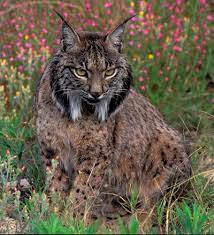

Hábitat y distribución

Es un felino de aspecto grácil, con patas largas y una cola corta con una borla negra en el extremo que suele mantener erguida batiéndola en
momentos de peligro o excitación.
Sus características orejas puntiagudas están terminadas en un pincel de pelos negros rígidos que favorece
su camuflaje al descomponer la redonda silueta de su cabeza.
También son características las patillas que cuelgan de sus mejillas.
Aparecen a partir del año de vida, cuando apenas cuelgan por debajo de
la barbilla y aumentan de tamaño con la edad. Los machos tienen las patillas y los pinceles negros y más largos que las hembras.
Su fórmula dentaria es 3/3, 1/1, 2/2, 1/1 = 28.
Su coloración varía de pardo a grisáceo con los flancos moteados de negro.
Existen tres patrones de pelaje:
-
Mota fina: con numerosas manchas de pequeño tamaño y repartidas uniformemente y de manera densa, que tienden a concentrarse en los flancos
laterales.
Mota gruesa A: las manchas son de mayor tamaño y tienen cierta tendencia a disponerse en líneas, apareciendo dos o más parejas de motas de mayor tamaño a nivel de los hombros.
Mota gruesa B: las motas son del mismo tamaño que en la mota gruesa A, pero no se aprecia ninguna ordenación específica ni las manchas de los hombros.
Costumbres y alimentación
Suele cazar en las llanuras, principalmente aves, haciéndolo habitualmente por parejas.
Aprovecha cortados rocosos para instalar sus nidos, o taludes del propio río, ubicándolos en cuevas o repisas cubiertas, protegidas de las
inclemencias del tiempo.
Protección y conservación
Pese a encontrarse distribuido por diversas localidades de una gran parte de la península, al ser zonas generalmente de reducidas dimensiones y
estar amenazadas, el pez está considerado en «peligro de extinción» en base al Real Decreto 439/1990,10 de 30 de marzo, por el que se regula el
Catálogo nacional de especies amenazadas.
Entre las causas que inciden negativamente en la supervivencia de la especie a nivel nacional se
pueden citar:
-
Contaminación de las aguas por residuos urbanos y agrícolas.
Destrucción o transformación de su hábitat.
Introducción de especies exóticas como el (cangrejo americano, la gambusia y la lubina negra).
Desaparición del canal y balsas de riego.
Contaminación del lecho fluvial por vertidos incontrolados.
Eliminación de algas en los Estanques, con productos tóxicos para el fartet (como, por ejemplo, el sulfato de cobre), o llevándose a cabo su techado, impidiendo la llegada de luz al agua.
Procesos de eutrofización (principalmente por vertidos de nitratos y sulfatos) y contaminación de las albuferas.

En la actualidad, quedan muy pocos ejemplares en el Mar Menor.
El coleccionismo también ha influido en su retroceso, ya que fue apreciada por los acuariófilos, aunque ese interés ha disminuido frente a especies tropicales más vistosas y por las sanciones..